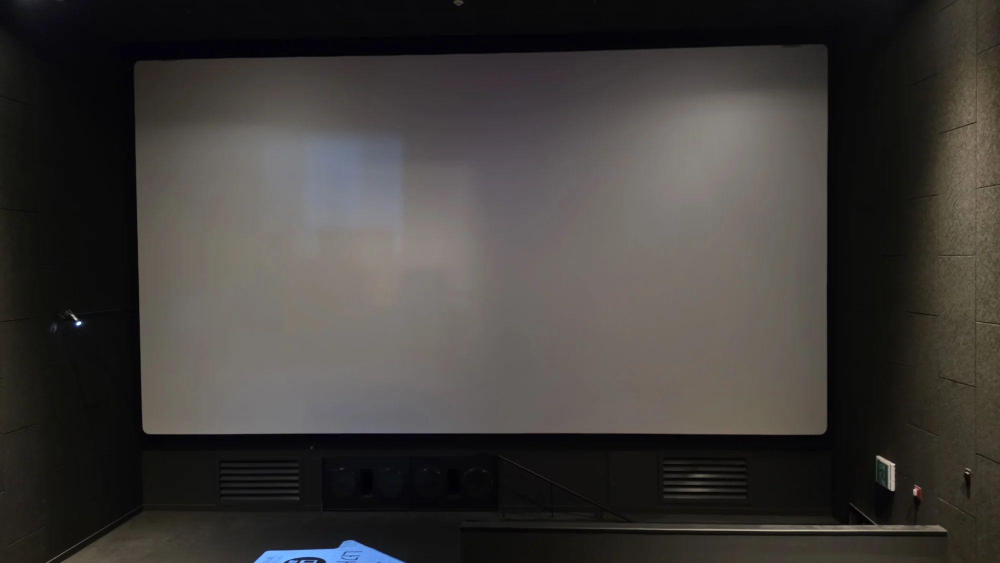
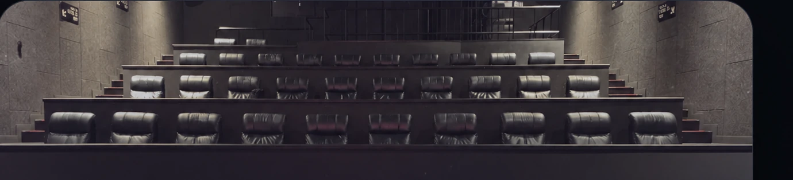

CGV DAEGU JUKJEON · CINEMA 03
좋은 자리는,
앉기 전에 알아볼 수 있어야 하니까.
같은 아이디어, 서로 다른 두 가지 경험.
34석 배치도를 기반으로 4개 좌석의 실제 촬영 시야 사진을 연결한 클릭형 시제품입니다.

CONCEPT 01 · CLEAN & SIMPLE2D · 좌석 시야 확인
심플하고 직관적인 좌석 배치도. 원하는 좌석을 선택하면 실제 촬영 사진을 즉시 보여줍니다.
빠른 비교 · 직관적 UI2D 체험하기 ↗

CONCEPT 02 · INTERACTIVE SPACE3D · 영화관 둘러보기
입체로 구현한 극장을 회전해서 둘러보고 좌석을 클릭하면 실제 시야 사진을 확인할 수 있습니다.
3D 회전 · 좌석 클릭3D 체험하기 ↗
● 실제 사진 등록: B10, C7, C10, D10 · 그 외 좌석은 사진 준비 중